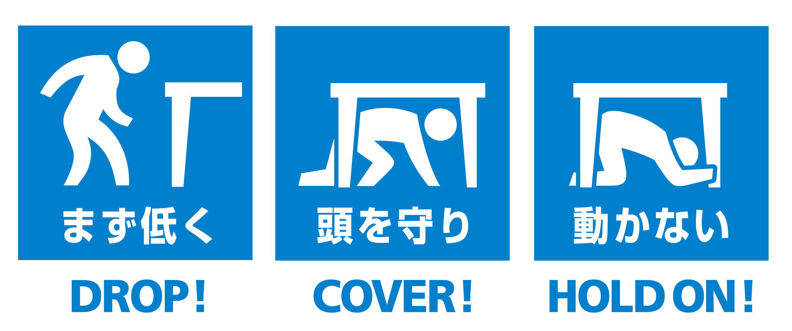

突然大きな地震が来ると慌ててしまい、適切な判断が難しくなります。
地震では、自分や家族の身の安全を確保することが最優先です。
大きな地震がきたら落ち着いて倒れやすい家具などから離れ命を守る行動をしましょう。
「もしものときの安全行動」
Safe actions in case of emergency
ごあいさつ
2024年4月8日月曜日
みなさんこんにちは、yumin地震観測所のyuminです。
先週の「災害用伝言ダイヤルの使い方」はご覧になられましたか？ご覧になられていない方は
こちら
からご覧いただけます。
さて、今回は地震発生時の身の安全の確保方法についてです。 突然大きな地震が来ると慌ててしまい、適切な判断が難しくなります。
適切な判断をし、一人でも多くの命を救えるように災害時のみの安全の確保方法も重要です。
やってはいけない6か条の項目
頭を守らない
頭は人間でいちばん重要な箇所です。頭部は脳を初め、感覚器官などが集中しているため少しのけがでも命の危険にさらされることもあります。
素足で歩く
地震発生時、窓ガラスや食器・花瓶などの破片が落ちている可能性があるので地震が収まったあと
室内を歩く場合、スリッパや安全靴などを履くことをおすすめします。
窓に近づく
窓ガラスの破片が飛び散る危険性があるため、窓の近くにどうしてもいなくてはいけない場合は飛散防止フィルムを貼るなどの対策をするか、カーテンを閉めるなどの対応を可能ならば行いましょう。
倒れやすい家具に近づく
タンスや食器棚は高さがあるため、大地震が発生すると倒れ、下敷きになる可能性があります。家具から離れられない場合は家具を固定するなどの対策を行いましょう
いきなり外に出る
屋根瓦などが落下する可能性があり、最悪頭を怪我する可能性もあります。
出口を閉めたままにする
ドアが歪んで開かなくなり、閉じ込められる場合があります。
火の始末は後です！！
身の安全を確保する方法
3つの安全⾏動
まず低く DROP！
頭を守る COVER！
動かない HOLD ON！

引用：
日本シェイクアウト提唱会議
提供：効果的な防災訓練と防災啓発提唱会議
©The Great Japan ShakeOut. All Rights Reserved.
揺れを感じたら
物が落ちない
移動してこない
倒れてこない場所
に、
素早く移動
しましょう